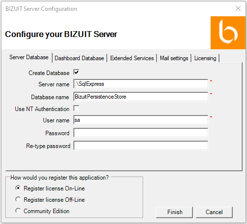

Se presentará la siguiente ventana para configurar la instalación de BIZUIT Server. La misma cuenta con una serie de pestañas en las que se encuentran agrupadas las opciones de configuración de la herramienta:

Anterior / Siguiente